AR(N)AN / The Floating Urban Atlas
Transit Kingdom.
Historical pre-correction gallery. The active world is now the R0-A2 environmental polish. Open its current screenshots and review evidence.
A first floating island for real urban research. These are unretouched screenshots from the integrated portfolio, not concept art or a separate game.
Owner visual review pending. Target average 4/5, no category below 3/5. No human rating has been assigned.
The implemented island
01 / Full island aerial

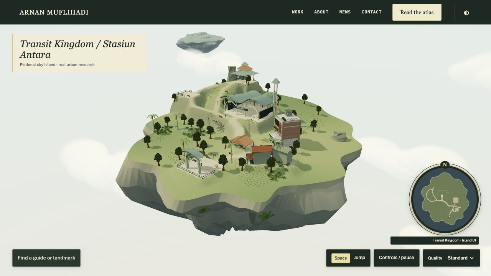
02 / Rock underside

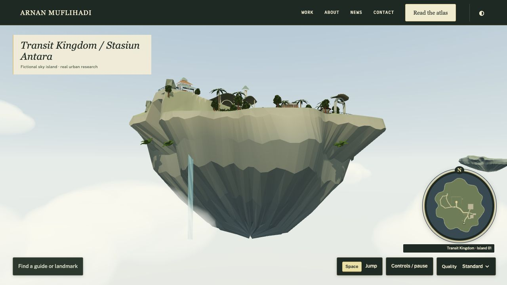
03 / Arrival skyport

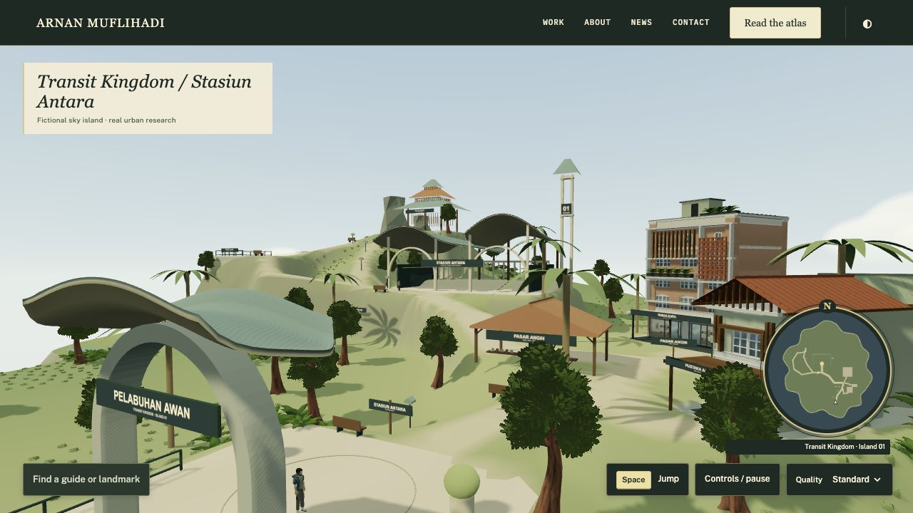
04 / Transit station

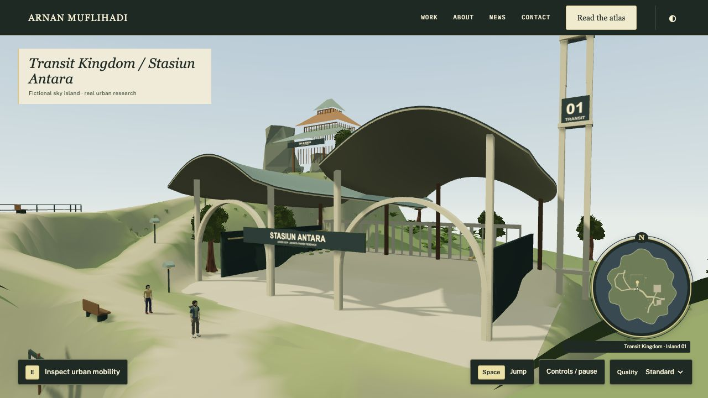
05 / Merchant quarter

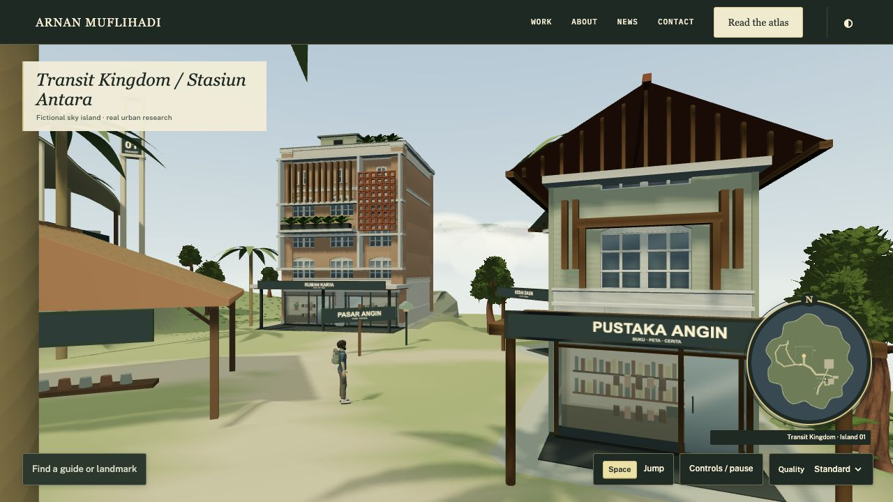
06 / Highland path

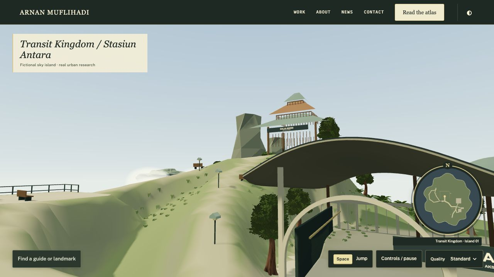
07 / Scenic overlook

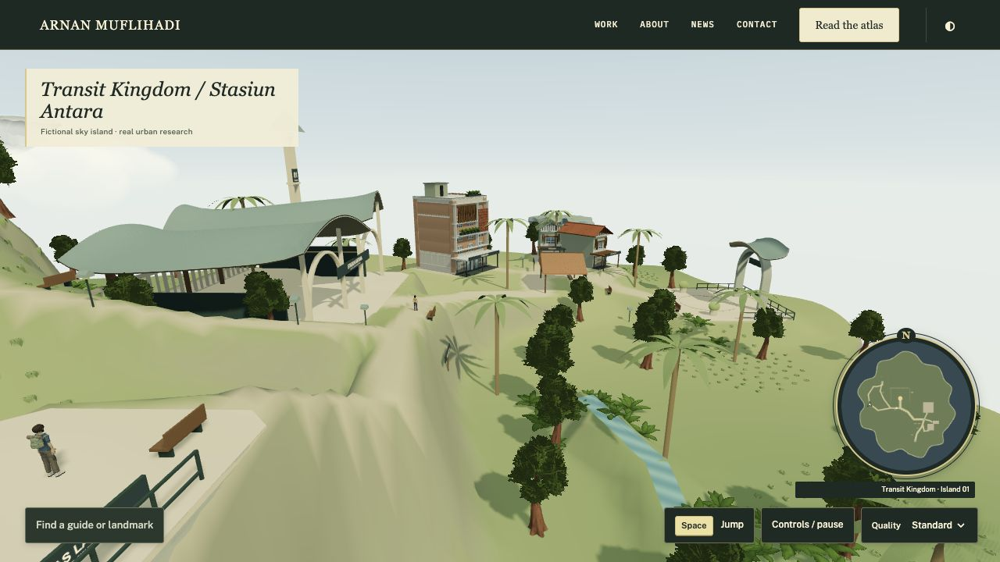
08 / Third-person exploration

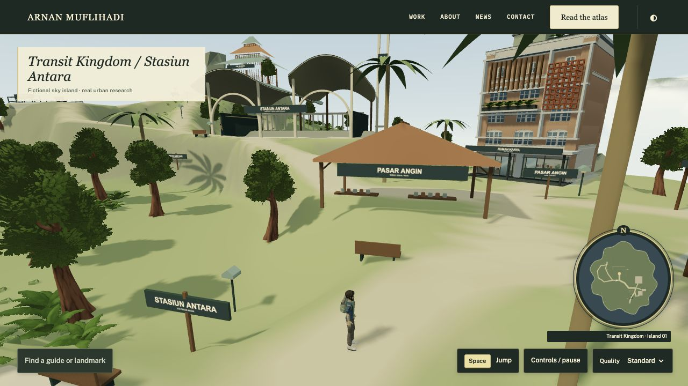
09 / Editorial portfolio

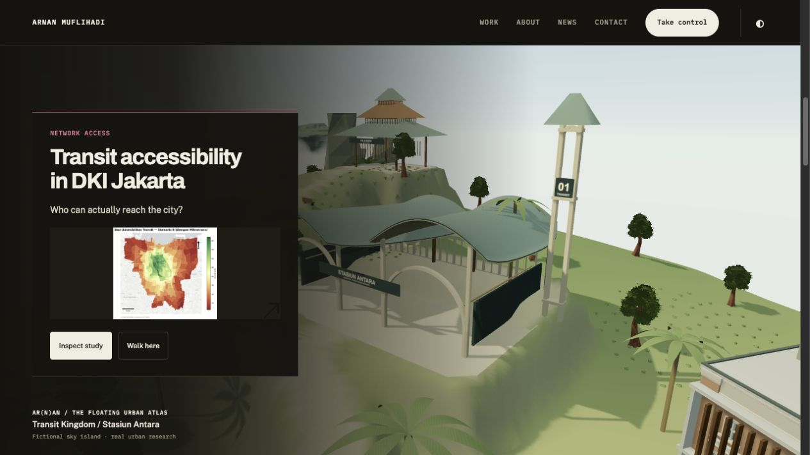
10 / Adventure in the same world

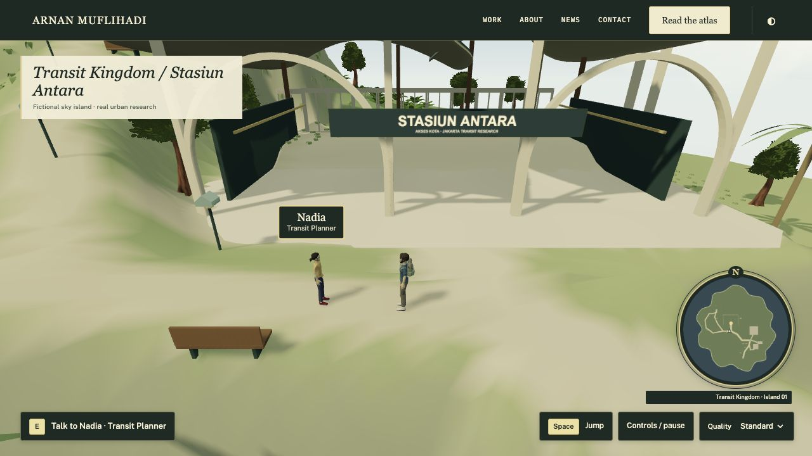
Previous district comparison
Phase 2 / Preserved

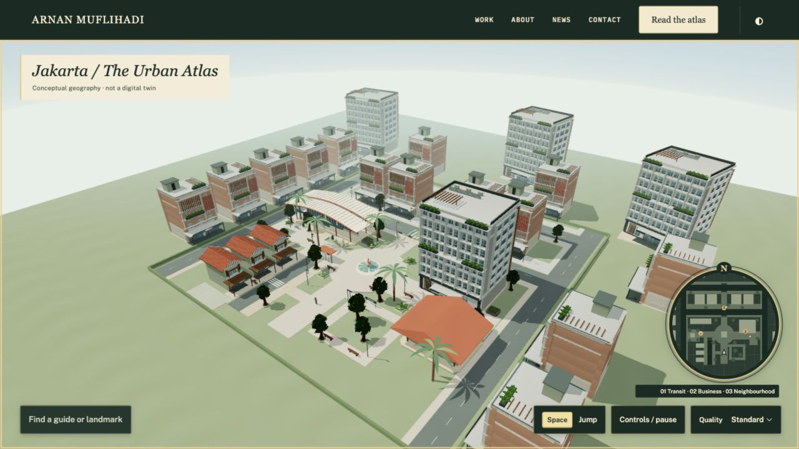
R0 / Floating landform
Actual input and research evidence
Held-key walking · Running · Jump · Transit study · MBR deep link · 390 px phone · 320 px phone


Evidence limits
The walking sample is 600 actual moving frames on this Mac/Chromium 156, 1280×656 canvas, pixel ratio one, shadows on. Mean 6.112 ms; p95 11.10 ms. It is not a performance guarantee for another computer or a physical phone. Cold network loading is not benchmarked.
Broad rock facets, dark canopy undersides, shallow shop interiors, planting density and the overall atmosphere remain matters for owner review. Distant islands are silhouettes. No dragon, flight, monster, equipment shop or new quest system is implemented.
Raw performance · Loaded assets and warm-cache timing · State/movement record · 58 unchanged audit findings · Asset manifest